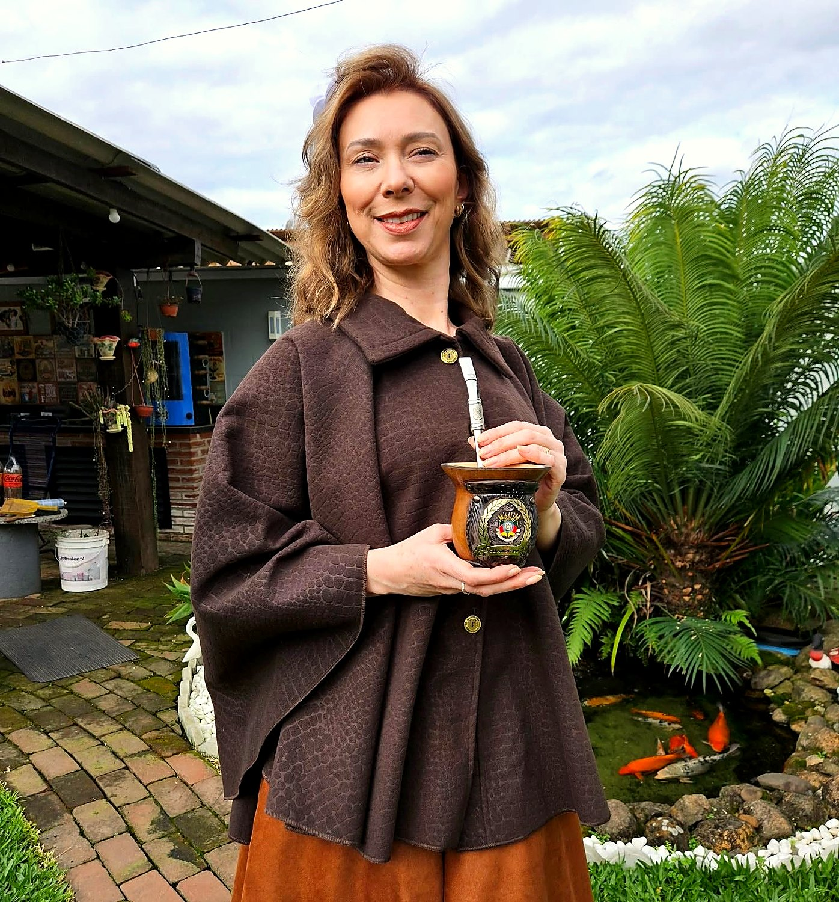
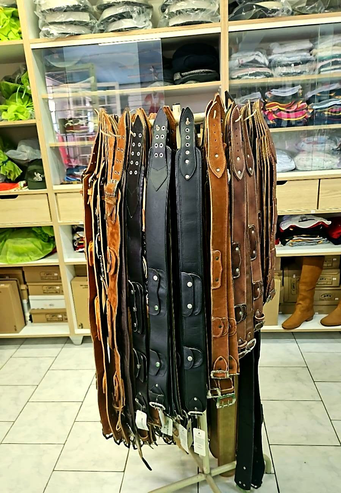
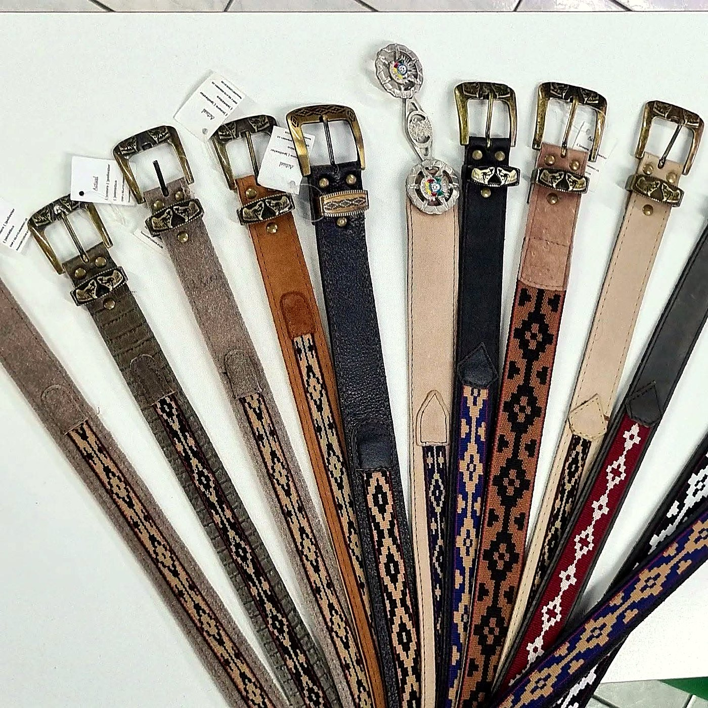
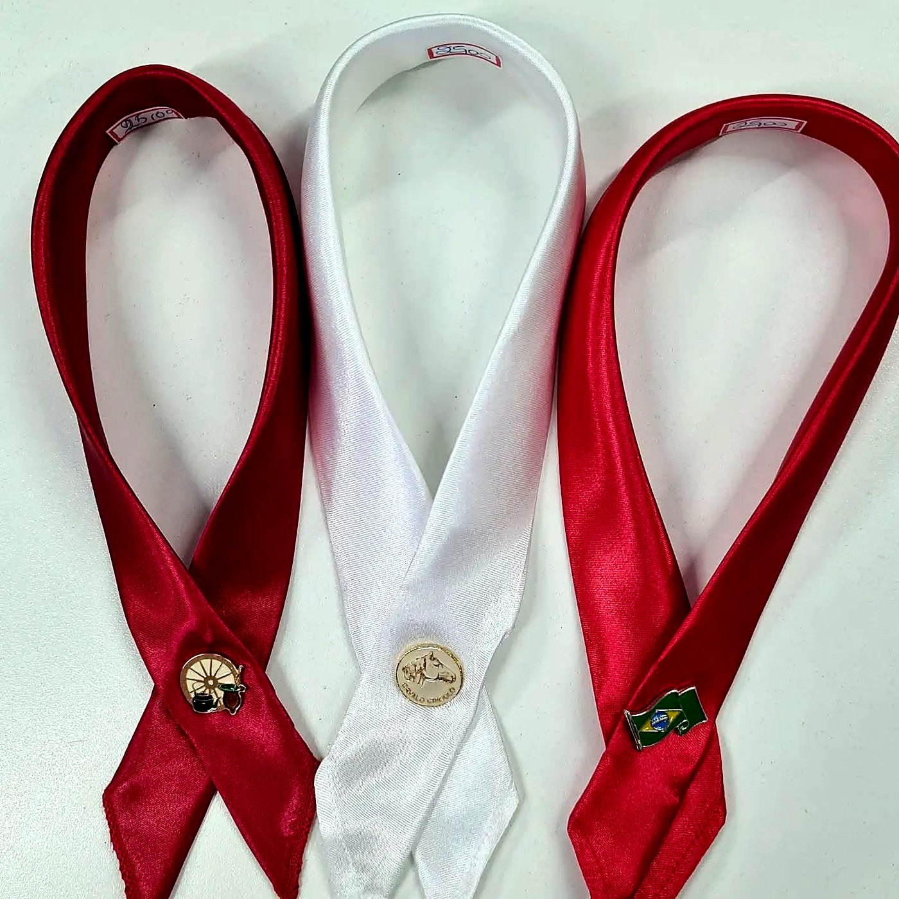

Moda em geral · Trajes gaúchos · Trajes típicos alemães
Do baile do CTG à festa típica e ao dia a dia — com atendimento pelo nome e conselho sincero sobre o que fica melhor.

Escolha a ocasião e fale com a gente pelo WhatsApp.
Uma loja de família, com calma e conselho sincero.
Trajes gaúchos e alemães completos para bailes, desfiles e festas.
Moda feminina, masculina e infantil para o dia a dia.

A Lurdes Moda Fashion nasceu em Vale Real em 1994, pelas mãos de Lourdes Feltes Seibert, do gosto de vestir bem as pessoas da nossa comunidade. Aqui você é atendido pelo nome, com calma e com conselho sincero sobre o que fica melhor.
Temos produtos para o dia a dia de toda a família e um cantinho especial para quem cultiva as tradições da nossa terra.
“Quem chega como cliente sai como amigo da casa.”
— Lourdes Feltes Seibert
Arraste para o lado — tem muito mais nas prateleiras.


Avenida da Cultura, 213
Centro — Vale Real, RS
Segunda a sexta: 8h às 11h30 e 13h às 18h
Sábado: 8h às 12h